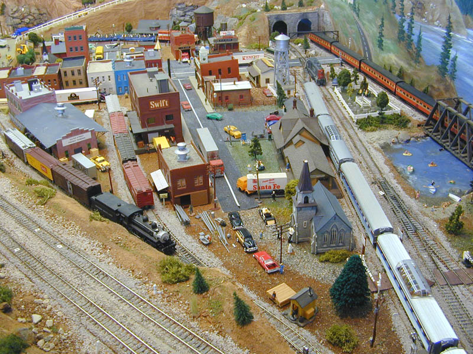
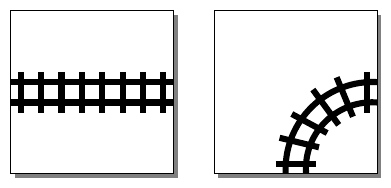
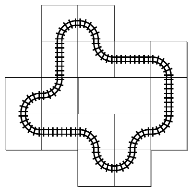

46th ICPC World Championship · Problem U

Every little child, and quite a number of adults, are fascinated by toy trains. From a toddler’s choo-choo train to a hobbyist’s elaborate model railroad filling an entire basement, they are a profitable business. The Toy Train Tracks Construction Company (TTTCC) manufactures train tracks for all ages and skill levels. To keep their existing customers busy and maybe attract some new ones, the TTTCC has recently started publishing maps for how to connect their train tracks into elaborate layouts. Usually, this starts with a designer coming up with an interesting track layout, and then publishing both the layout and the required number of different track segments (say, curves and straight parts) needed to construct it. But the TTTCC has recently learned that many customers are looking for the reverse: they already have train track segments lying around (maybe found in grandma’s attic), and would like to use them to create a large train course. How difficult might that be?
To study the feasibility of automating the layout-creation process, TTTCC is interested in constructing train courses using two different shapes: straight line segments, and 90-degree turns (see Figure U.1).

Valid layouts are created by placing these shapes on a square grid, with each track piece taking up exactly one grid cell. Both types of pieces can be rotated in 90-degree increments. A “proper” train track needs to be connected, and should form a single closed loop. Given a set of straight and curved track segments, what is the longest closed loop that one can construct?

The input consists of a single line containing two integers s and c, the number of straight and curved track segments available, respectively (0 ≤ s ≤ 105, 4 ≤ c ≤ 105).
Output a train loop using at most s straight segments and c curved segments, that has the longest length (in number of track segments used) under this restriction. The loop must be closed and cannot intersect itself. If there are multiple loops of maximal length, any one of them will be accepted.
If the loop is of length n, then print a single string of length n, where the characters represent the loop’s segments as encountered in a single traversal. The character ’S’ stands for a straight-line segment, ’L’ for a curved segment that is a left turn, and ’R’ for a curved segment that is a right turn.
4 12
LSRLLRLSLSRLLSRL
1 5
LLLL